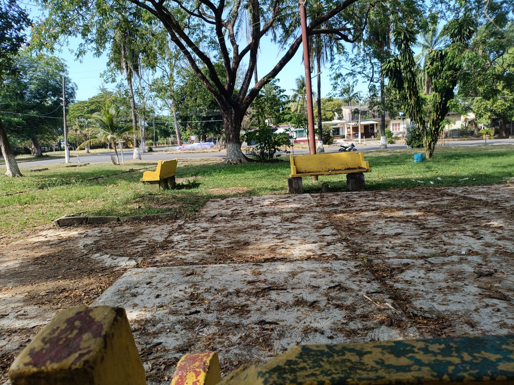
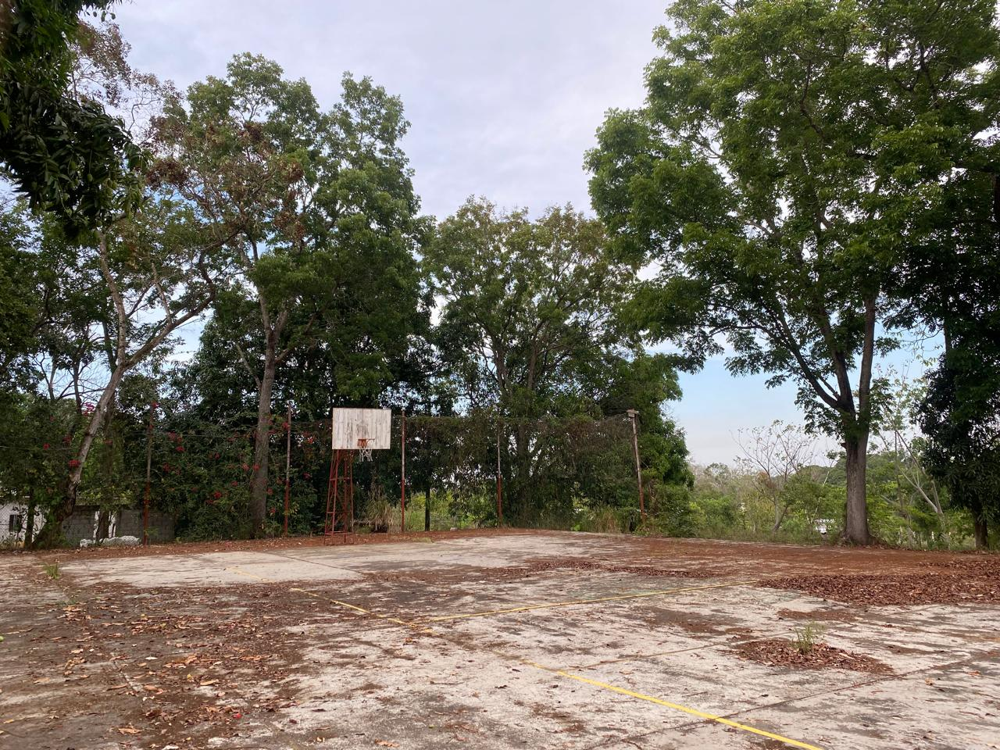

Lugares de interés de Ciudad Alemán
Conocerás lugares de Ciudad Alemán para visitar, si gustas pasar una tarde relajada en familia, para conectar con la naturaleza.
Te puede servir para relajar tu mente.
Lugares de interés:
- PARQUE.
- BOULEVARD.
- CAMPO DEPORTIVO.
- CANCHA DE BÁSQUETBOL.
1.PARQUE:
Se convierte en un lugar especial por su tranquilidad y su contacto directo con la naturaleza, es un espacio donde predominan los árboles que brindan una sombra agradable. Al estar en este parque, se puede notar cómo el ambiente es relajante, esto lo hace un sitio ideal para leer, platicar, pensar o simplemente pasar un momento agradable.
Además, es un sitio que promueve la convivencia: Las familias pueden compartir un tiempo de calidad, los niños pueden jugar con libertad y las personas pueden reunirse para platicar en un ambiente cómodo y natural. Es una experiencia placentera en un entorno verde y amplio, no solo significa pasar el tiempo, sino aprovechar un espacio que invita a conectarte contigo mismo,con la naturaleza y con quienes te rodean.

2.BOULEVARD:
Un espacio en el que puedes salir a correr con comodidad, caminar sin prisas, realizar juegos y convivir en familia; tambié es ideal para salir a pasear a tus mascotas con libertad. Ofrece un ambiente fresco, tranquilo y seguro. Es un lugar que promueve el bienestar físico y la relajación, ofreciendo un entorno limpio, abierto y accesible para personas de todas las edades que deseen realizar actividades al aire libre.

3.CAMPO DEPORTIVO:
El campo deportivo no solo es un lugar para correr, caminar o practicar algún deporte; también es un punto de encuentro donde familias, amigos y vecinos pueden reunirse para compartir momentos agradables. La amplitud del lugar permite que cada persona encuentre su propio ritmo. Estos espacios están pensados para que personas de todas las edades puedan realizar actividad física en un ambiente seguro, amplio y al aire libre, rodeado de naturaleza y tranquilidad.

4.CANCHA DE BASQUETBOL.
Un lugar ideal para los amantes del básquet, es un lugar donde hay mucha naturaleza, ideal para pasar el rato y apreciar la una linda naturaleza mientra juegan.

Espero te haya sido util y puedas visitar los lugares presentados.